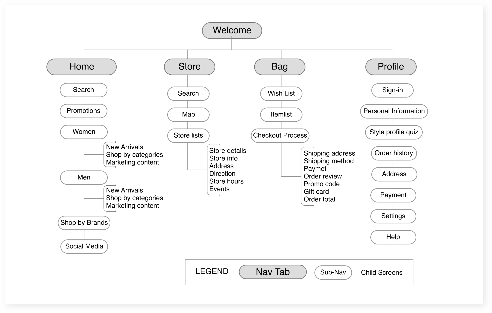
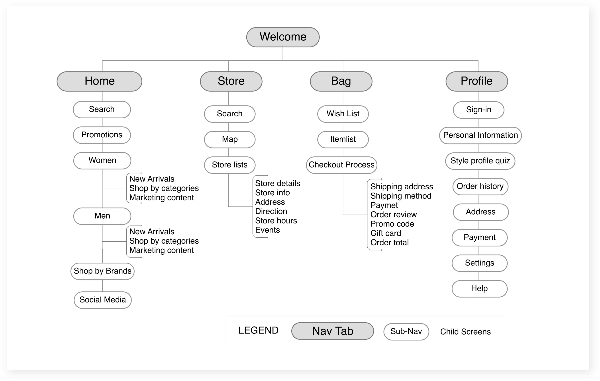

Earth
To comply with NDA, these designs are a reinterpretation of the original using a fictitious brand.
Roles: User research, information architecture, UX/UI Design
Tools: Sketch, Zeplin, Keynote, Google Sheet, Jira
Duration: Jan - Mar 2020
My role
As the lead designer of this project, I used design thinking process to create an end-to-end e-commerce application. I also created a complete design system that is used internally to improve efficiency among designers.
Process
The Challenges
The current Earth app is outdated. My tasks included:
1. Redesign the app by using existing technology to create the e-commerce of future for Earch to sell to potential clients.
2. Create an organized design system that is modern yet modular enough for any retail company.
The Solution
Using insights from research, I revamped the visual of the app, and focused on detailed guidance and support to help Kylie shop faster and confidently. With Earth, Kylie can also easily to stay up with the latest trends and find personalized products recommendations that are best suited for her without hassel.
RESEARCH
I started off by talking to my team lead and surpervisor to learn about the project. The goal was to create an e-commerce app with a focus on fashion retailers. It needs to be modular and modern enough for any retailer to use.
Interviews
In order to narrow down the scope of the project, I decided to conduct some interviews to dive deeper into consumers’ behaviors, needs and pain points. I interviewed five femles from 20-48 who shop clothes at least once a month. During the interviews, I focused on asking them open-ended questions about their sopping experiences.
DEFINE
With interview notes, I started to synthesize my findings, and created our persona Kylie. She is a young, working professionals who wants to keep up with the latest trends and find clothes that are best suited for her without hassle.
Persona

HMW
Using the insights from research, in order for Earth to stand out, I needed to tackle below challenges:

Feature Roadmap
After research, me and other designers started to brainstorm features. During this stage, I also did some market research to learn about market trends. Since e-commercei is such a big topic, it was important to prioritize features. Finally taking into consideration of impact, feasibility and constraints, we decided to focus on below features. All p1 to p3 were included in the final design.

Information Architecture
Being an online clothes shopping platform with massive choices of product, as such, a clearly organized sitemap was crucial to visualize the high-level content. After doing some competitive analysis of other e-commerce apps, I created a sitemap to layout information in a way our users would expect.
Before I walk you through Kylie’s jorney using Earth, comparing the old version to the new version. I’d like to give you a high level overview of what Kylie can do on Earth. Below are four main things Kylie can do:
 

CHALLENGE 1
How might we help Kylie to stay up with the latest trends?
From research, we learned that Kylie is a young marketing coordinator. Let’s imagine Kylie has a marketing conference in a week. She needs to find a new professional and fashionable outfit. She went to some shops, the clothes were either too expensive or didn’t look good for her taste. She learned about Earth from a friend, she’s willing to give a try.
Before
When she opened the old app and quickly browsed a bit, she ran into some problems:

After
Keeping Kylie’s goals in mind, I decided to combine home and catalogue together, and moved bag to the bottom navigation. Inside of this home page, every feature is carefully though to make Kylie discover trendy clothes and shop faster.

CHALLENGE 2
How might we help Kylie to find clothes easily?
After browsing the app, Kylie decided to find a blouse for her conference. With the old app, Kylie needed to go through all the countless blouses without getting help from Earth.
Search & filter
To improve the efficiency, with the new version, I focused on comprehensive filter and sort function as well as personalized recommendations. With some iterations and informal testing, I arrived at below decisions.

Personalization
My style profile feature consists of a simple quiz about Kylie’s sizes and styling preference etc. Based on the quiz results, Earth can recommend products for Kylie.

CHALLENGE 3
How might we increase Kylie’s confidence in online shopping?
After finding a blouse that interests Kylie, with the old app, Kylie was reluctant to hit the “checkout” button because she’s not sure about the size, shipping and return policy, plus following problems:
Before

After
In order to help Kylie to make an informed decision and boost her confidence in online shopping. I focused on detailed product information, thorough reviews and smooth checkout experience.
Product Details

Checkout
From research, we learned that unclear shipping and return policy with long checkout process frustrates Kylie. Keeping Kylie’s frustrations and the usability issues of the old app, I made below decisions:

DESIGN SYSTEM
The old design systems had the following problems:
Before
- Sketch symbols duplicate when multiple designers making changes on different devices. (see below image with lots of duplicates “copy 1”, “copy 1 copy 2” etc.)
- Time consuming to clean symbols.
- Inconsistency such as colors, icons, fonts, naming conventions. (See same buttons have different names and colors)

After
Created completed design system:
- Created consistent symbols: icon style and strokes.
- Created responsive elements that can be adapted to different devices.
- Unified naming convention.
- Created a font system that can be reused for any other projects.

Prototype
REFLECTION
Designing a e-commerce platform might seem to be straightforward since it is a mature market with a lot of existing design patterns; however, even with a mature market, e-commerce still neglects some aspects that users are asking for which greatly impacts sales. As a UX designer, we should always strive to find the real problems.